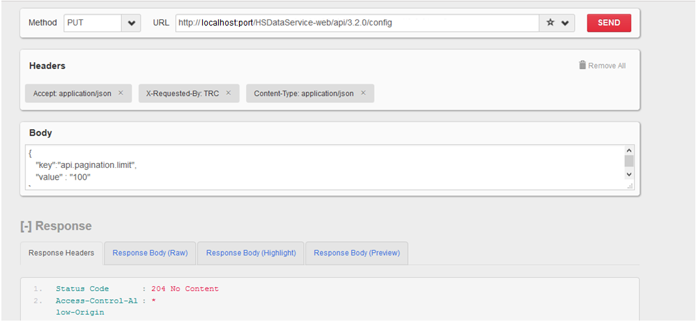
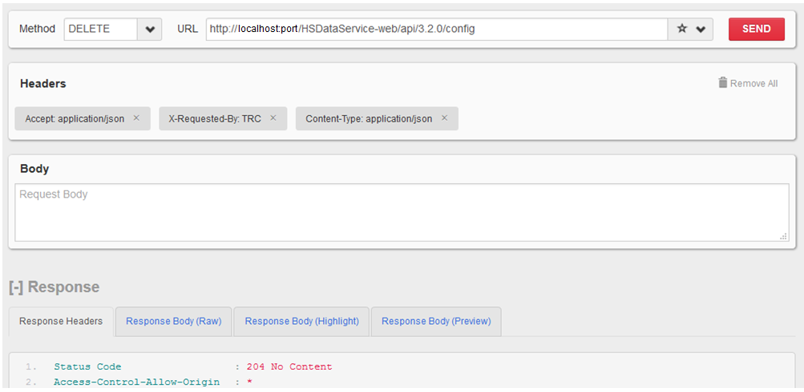

Administration
This section provides information on configuring the system.
Configuring the System
During OHTR installation, default values are configured in the system for pagination and date format. The REST API services use these default values. The property and values configured are:
| Key | Default Value | Description |
|---|---|---|
| api.pagination.limit | 100 | Default Pagination Limit |
| api.dateformat | MM/dd/yyyy | Default Date Format |
These default values can be updated or re-loaded using the Administration REST APIs.
For details on setting up the OHTR system, see the Quick Start section.
You can use tools such as Mozilla REST client, Postman, cURL and so on to consume the APIs.
To access the OHTR REST Admin API URLs, the user should be assigned the trc-api-admin-user role.
Use the APIs in the following section to configure the OHTR system.
Updating the Configuration
Use the Update Configuration API to update the date format and change pagination.
Request Type
PUT
Request URL
http://<hostname>:<port>/HSDataService-web/api/3.2.0/config
Request Body — To Configure Pagination
{
"key":"api.pagination.limit",
"value" : "200"
}
Request Body — To Configure Date Format
{
"key":" api.dateformat",
"value" : "dd/MM/yyyy"
}
Make sure that you provide the date format in the Java date pattern. For details on this pattern, see Date Format Pattern Syntax.
Request Header
Content-type : application/json X-Requested-By:TRC Accept:application/json Authorization: <username>/<password>
Response Header
204 No Content
Reloading the Configuration
The administration configuration values are cached in the application. When the configuration values are changed, you must reload the cache before use. Invoke the Reload Configuration API to reload the configuration values. In a clustered environment, this should be called on each node. You can also reload the configuration by redeploying the application.
Request Type
DELETE
Request Header
X-Requested-By:TRC Accept:application/json Authorization:<username>/<password>
Response Header
204 No Content